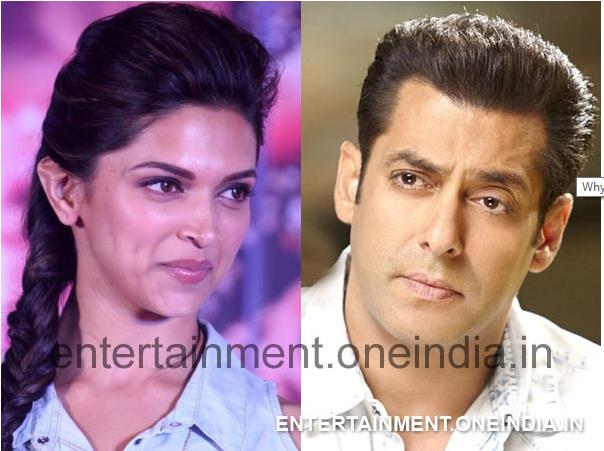

Why Salman Khan Refused To Work With Deepika Padukone?According to a news story on Emirates 24/7, Sooraj Bharjatiya wanted to cast Deepika Padukone opposite Salman Khan in his next film. However, Salman brushed her aside saying that he didn't want to work with a 'busy' actress! Hmmm.... We wonder what was on his mind! Either he made this decision because Dips is too busy or....yes, you guessed it right - He might have some newcomer on his mind! Salman Khan, unlike his contemporary Aamir Khan, rarely interferes in the production and film making process. However, it seems like Sallu has changed with time! Rajshri Productions, who usually prefer to go with their own music composers will have Himesh Reshammiya compose music for this film. Now... didn't you know that Himesh is a very good friend of Salman??? Shhh....we are not saying anything here! |